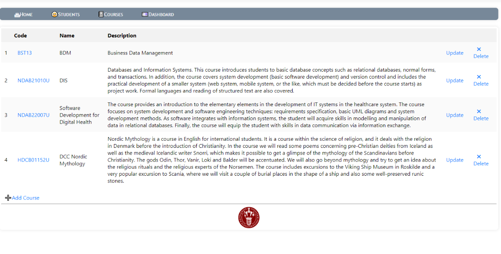

Course Enrollment
A simple web application built using Flask to manage students, courses, and enrollment data.

Tools and technologies Used:
- Programming Languages: Python, HTML, CSS
- Framework: Flask
- Database: SQLite with SQLAlchemy ORM
- Development Environment: Visual Studio Code
- Data Storage: CSV files
Key Concepts:
- CRUD Operations: The web app allows users to Create, Read, Update, and Delete (CRUD) entries for both students and courses. This includes managing student enrollment in courses.
- Data Persistence: Utilizes SQLite and SQLAlchemy for data storage, ensuring that all changes to student and course information are persisted between sessions.
- Web Development: Implemented front-end interfaces with HTML and CSS, allowing for user-friendly interactions with the underlying data.
Achievements:
- Successful Integration of SQLite with SQLAlchemy: Enabled seamless data management, allowing the app to store and retrieve data efficiently.
- Fully Functional CRUD System: Developed a fully functional CRUD system that handles all aspects of student and course management.
- Data Export to CSV: Implemented functionality to export data to CSV files, providing users with a portable and readable format for their records.
Lessons Learned:
- Understanding Flask's Routing System: Gained a solid understanding of how Flask handles routing and request management, crucial for creating dynamic web applications.
- ORM with SQLAlchemy: Learned the principles of Object-Relational Mapping (ORM) and how SQLAlchemy simplifies database interactions in Python.
- User Experience Design: Recognized the importance of user-friendly design in web applications, particularly in creating clear and intuitive interfaces for managing data.